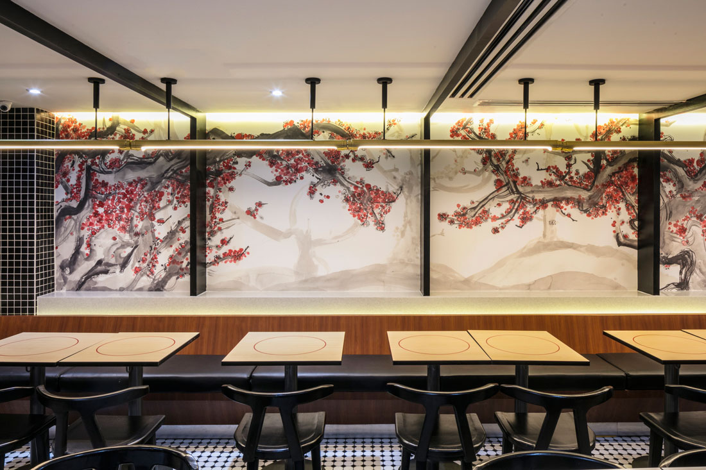
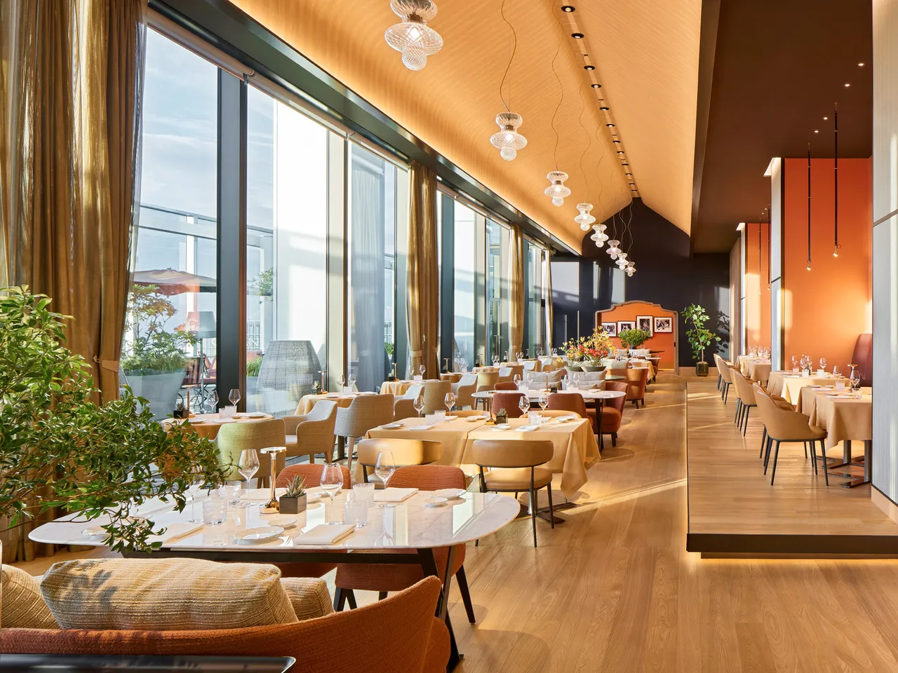
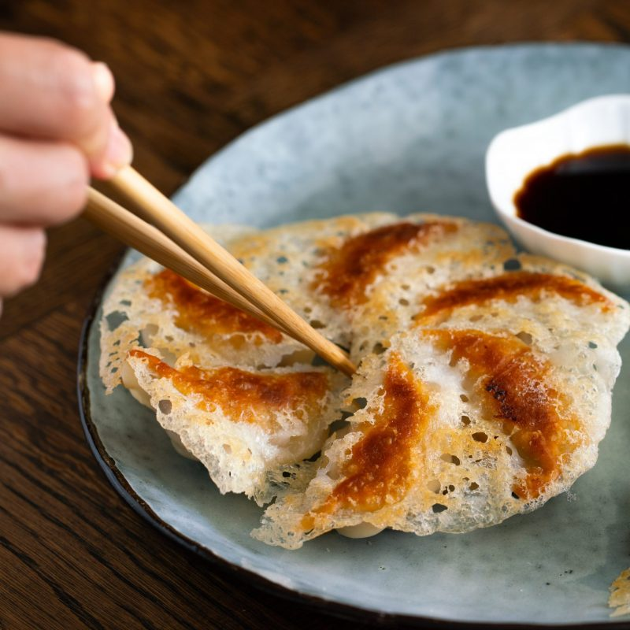
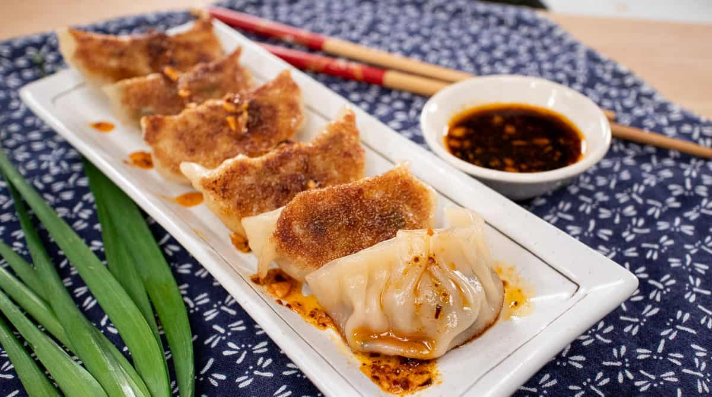
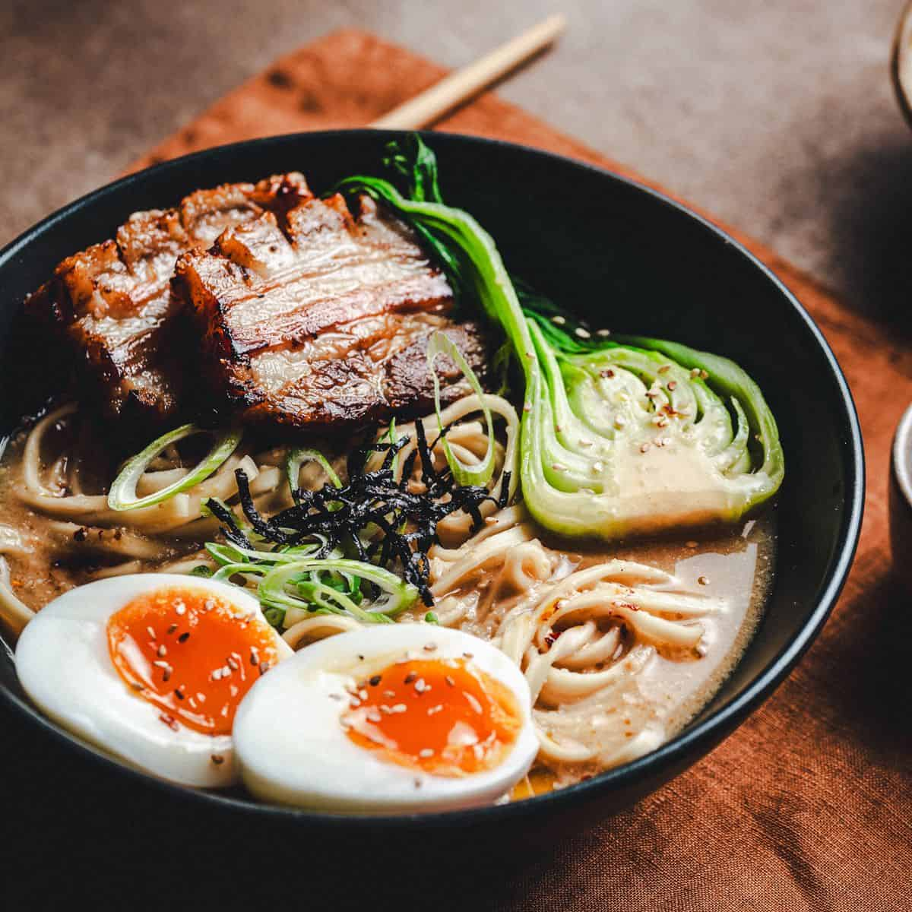
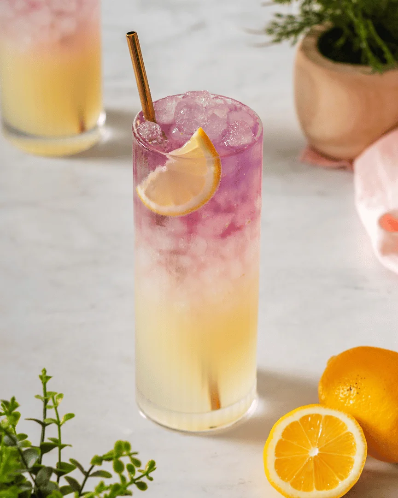

Kaze Izakaya Tokyo, Japan


Starter: Crispy pork gyoza dumplings
The gyoza were pan-fried to perfection, with crispy golden bottoms and soft, tender tops. The pork filling was juicy and full of ginger and garlic flavour. Dipped in the tangy soy-vinegar sauce, they disappeared far too quickly.


Main: Tonkotsu ramen with soft-boiled egg and pork belly, paired with iced yuzu lemonade
The tonkotsu broth was rich, creamy and deeply savoury, the result of hours of slow simmering. The noodles had the perfect bite, the pork belly melted in my mouth, and the soft-boiled egg had a beautifully jammy yolk. The iced yuzu lemonade was the perfect match. Its bright, citrusy freshness cleansed my palate between each rich, comforting spoonful.


Dessert: Matcha green tea ice cream with mochi
The matcha ice cream was smooth with a gentle, earthy bitterness balanced by just enough sweetness. The soft, chewy mochi added a lovely contrast in texture. It was a light and elegant end to a hearty meal.